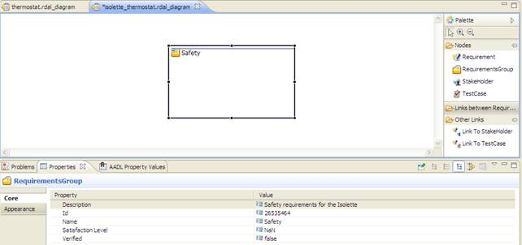

2.1.1 Creating a RDAL Diagram
To create a new RDAL specification with the diagram editor, on the "File" menu, click "New / Other"…. In the dialog box that pops
up, go to the RDAL folder and select "RDAL Diagram" as indicated in Figure 3. Follow the wizard instructions to give a name and
a project location to contain the specification. RDAL specifications can be placed in any project of the Eclipse workspace, but
because they are an linked to system architecture models, a good practice is to put them in the same project as the one that
contains the architecture model to be verified by the requirements specification. At the end of the wizard, a diagram editor
page opens showing an empty RDAL specification.
Figure 3: Creating a new RDAL diagram.
2.1.2 Setting the RDAL Specification Properties
The next thing to do is to set a few properties for the newly created requirements specification. This is done with the help of
the Property view. To show this view (if it is not already shown), go to menu "Window / Show View/ Properties" (Figure 4). An
RDAL specification should have a name, a description, contact information and a version (Figure 5).
Figure 4: Showing the property view.
Figure 5: Properties of a RDAL specification.
Depending on the level of detail of the requirements, a RDAL specification may be linked to a number of system architecture
specifications by setting the "Specifies" property. This can be performed by selecting the "Specifies" line in the property view,
clicking the button on the right side of the line, and selecting the architecture model specifications from the dialog box that
shows (Figure 6). The "Specifies" property must be set for the requirements expressed in terms of a formal language to be
verifiable automatically. Furthermore, only design components of the design specifications referenced by the "Specifies"
property can be verified by requirements of the requirements specification.
Figure 6: Setting the system architecture specifications that a RDAL specification specifies.
2.1.3 Creating a Group of Requirements
In RDAL, requirements are organized into groups contained in a specification. A group of requirements is created by selecting
the "RequirementsGroup" item from the diagram palette (Figure 7) and by dragging it into the canvas of the editor.

Figure 7: Creating a group of requirements from the diagram palette.
By selecting the new requirements group box in the canvas, the property view allows for setting the requirements group’s name and
description properties (Figure 8).

Figure 8: Setting requirements group’s properties.
2.1.4 Creating a Requirement
A requirement is created like the requirement group by selecting the requirement element in the palette and by dragging it
inside its containing requirements group. The main properties to set from the property editor are the name, description,
rationale, type and risk.
2.1.5 Creating a Stakeholder for a Requirement
A requirement can be linked to stakeholders, which represent individuals interested in the requirement being verified by the system to be
implemented. Like for requirements, stakeholders can be created from the palette and their name and a description can be set with
the properties view. A requirement can be linked to a stakeholder by creating a "Link to Stakeholder" element from the palette. Select
the requirement and then the stakeholder in the canvas to draw the link (Figure 9).
Figure 9: Creating a stakeholder and linking it to a requirement.
2.1.6 Creating Relations between Requirement
A requirement can be derived from, decomposed to or refined by another requirement. These relations are created by selecting the
appropriate link item from the palette and by dragging it between the elements on the diagram. Figure 10 shows an example of requirement
derivation.
Figure 10: Creating a requirement derived from another requirement.
2.1.6.1 Establishing Relations between RDAL Elements and Elements from other Models
Elements contained in a RDAL specification can refer to elements from other models. While this cannot be displayed graphically in
the current editor, it can still be set from the standard property view. The first thing to do is to load the other specification
by right-clicking the "Load Resource" menu from the graphical editor (Figure 11). Once this is done, a field of an element of a
RDAL specification (e.g. the "Derived From" field of a requirement) may be set to refer to elements of the previously loaded model
using the property view (Figure 12).
Figure 11: Loading an external RDAL specification.
Figure 12: Setting the "Derived From" property of a requirement to a requirement contained in another requirements specification.
Back To Top